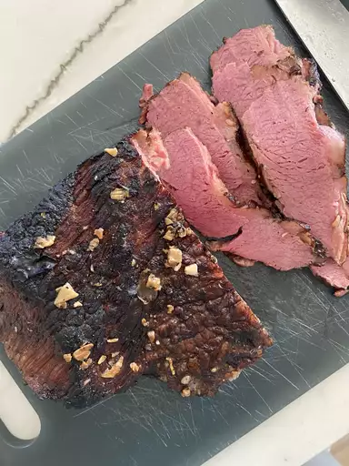

Braised Corned Beef Brisket

Description
You have never had corned beef like this and if you try it, I truly
believe you will never go back to the traditionally 'boiled' beef. This
recipe was given to my mother-in-law and it has become a treasured family
recipe. The brisket is seared in a hot skillet to give it a caramelized
surface when it's done, topped with sliced onions, garlic, and a drizzle
of broth, then braised for about 6 hours for a tender, juicy roast. It's
so worth the wait! I serve it with colcannon, steamed cabbage wedges,
braised carrots, and parsnips. It is our favorite St. Patrick's/Jewish
dinner, but we love it so much that I cook it year round.
Ingredients
- 1 (5 pound) flat-cut corned beef brisket
-
1 tablespoon browning sauce (such as Kitchen Bouquet®), or as desired
- 1 tablespoon vegetable oil
- 1 onion, sliced
- 6 cloves garlic, sliced
Steps
- Preheat oven to 275 degrees F (135 degrees C).
-
Discard any flavoring packet from corned beef. Brush brisket with
browning sauce on both sides.
-
Heat vegetable oil in a large skillet over medium-high heat and brown
brisket on both sides in the hot oil, 5 to 8 minutes per side.
-
Place brisket on a rack set in a roasting pan. Scatter onion and garlic
slices over brisket and add water to roasting pan. Cover pan tightly
with aluminum foil.
- Roast in the preheated oven until meat is tender, about 6 hours.